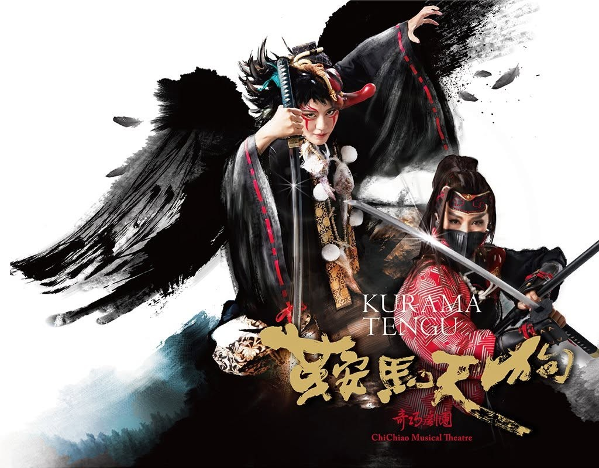

2024 / 2025
《生命之花——論21世紀臺灣歌仔戲生產機制的變化》
國立臺灣藝術大學表演藝術學院博士論文
2025 年獲國立傳統藝術中心獎助編劇、導演、演員、研究者。
國立臺灣藝術大學表演藝術學院藝術學博士，國立臺南大學、國立高雄師範大學兼任助理教授。
創作橫跨歌仔戲、豫劇、京劇、音樂劇及當代劇場。長期耕耘「跨劇種」混融創作，致力透過編導、策展與教學，擴展傳統戲曲的實踐面向與組織工作。作品曾獲台新藝術獎年度五大節目。除劇場創作外，亦受邀統籌多項大型表演活動、頒獎典禮以及文化慶典。近年工作持續往返於創作、研究與教學之間，關注戲曲創新、跨劇種實驗、劇場轉譯、文本改編及臺灣歌仔戲生產機制等議題。

CHICHIAO HU-PIE-TSAI THEATRE
奇巧劇團於2004年在高雄成立，由臺灣戲曲國寶王海玲與女兒劉建華、劉建幗為核心主創，劇團命名取自姊妹小名「小奇」、「小巧」。長期致力於「傳統」與「創新」的持續對話，以貼近當代的胡撇仔美學與跨界混融為手法，將不同劇種、音樂與新世代語言揉合為一部部風貌各異的原創戲曲作品，並屢獲國內外藝術節委託創作及演出。奇巧期望以豐沛的創作能量與輕鬆活潑的表現方式，帶動更多現代觀眾，尤其年輕族群走進劇場、親近戲曲、理解戲曲，進而熱愛戲曲，使傳統戲曲文化得以在寶島紮根、隨時代流傳，並向世界發聲。
更多資料 More →由《鏢客》、《錦衣》至 2026《行俠》，持續展開臺灣豫劇團的武俠創作世界。
更多資料 More →2024 / 2025
國立臺灣藝術大學表演藝術學院博士論文
2025 年獲國立傳統藝術中心獎助2023
《戲曲學報》第 28 期
2019
王安祈、劉建幗｜時報出版